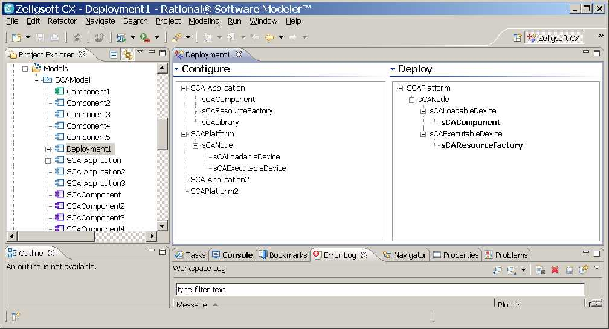

Only configurable elements can be dragged onto the Deployment Editor Configure pane.
In the SCA domain, the configurable element types are:

Source elements can be deployed to target elements. In the Deployment Editor, source elements on the Configure pane, can be dragged/deployed onto target elements on the Deploy pane.
In the SCA domain, the source elements are:
The target element is:
An SCAComponent, SCALibrary or SCAResourceFactory can be deployed onto an SCALoadableDevice.